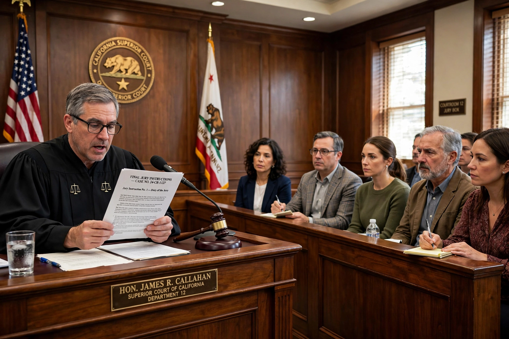

Pattern jury instructions

Pattern jury instructions (also called model jury instructions or standard jury instructions) are standardised texts of legal instructions that trial judges in jury cases use to explain the law to the jury. Prepared in advance by committees of judges, lawyers and scholars — for example, the Judicial Council of California (whose civil and criminal sets are known as CACI and CALCRIM), the Illinois Supreme Court Committee on Jury Instructions (IPI), and committees in most federal circuits — pattern instructions cover everything from the burden of proof and the definition of negligence to the elements of particular offences and defences.
Purpose and use
Before jurors begin deliberations, the judge instructs them on the law they must apply to the facts as they find them: the elements of each claim or charge, the parties' burdens, the standard of proof (preponderance of the evidence in most civil cases, beyond reasonable doubt in criminal cases), and how to evaluate evidence and credibility. Using an approved pattern instruction reduces the risk that a judge's improvised statement of the law will contain reversible error, and gives counsel a settled text around which to request additions or modifications at the charge conference. Trial courts are generally required or encouraged to use the applicable pattern instructions where they exist, though whether use is mandatory varies by jurisdiction, and parties may request non-pattern (sometimes called "special") instructions where a pattern does not cover the issue.
History
The movement for standardised instructions grew in the middle decades of the 20th century, as appellate courts repeatedly reversed verdicts for instructional errors and as the drafting of instructions from scratch in each case consumed increasing judicial time. California's pioneering sets (the civil BAJI instructions from 1938 and criminal CALJIC), and committees such as that chaired by Edward J. Devitt for federal practice (Devitt and Blackmar), set the model followed across the United States. Committees periodically revise the instructions to reflect changes in the law and to simplify archaic language.
Criticism
Researchers in law and psychology have criticised many pattern instructions as written in legal language far above the reading level and comprehension of typical jurors: classic studies found jurors understood barely half of standard instructions on topics such as the presumption of innocence and the burden of proof. Reformers advocate plain-language drafting, written copies of instructions for the jury room, preliminary instructions before evidence begins, and allowing jurors to take notes and ask questions. Successive revisions of several sets, including California's move from BAJI to the plainer CACI, have been influenced by this research, although critics argue that the law itself often resists simple statement.